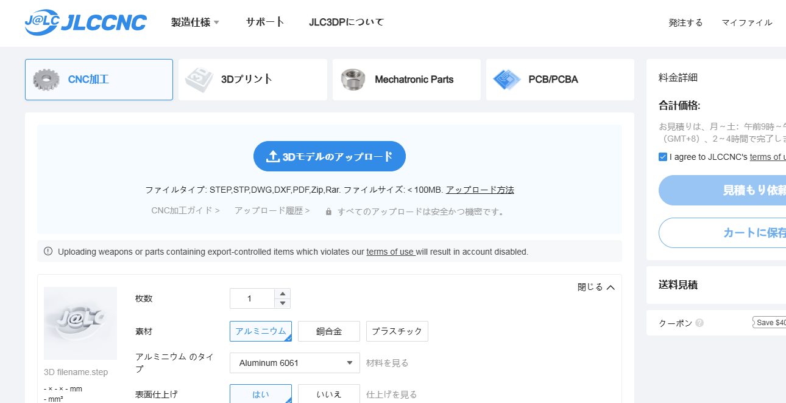

ドリブラー対応フレームへ
2024/11/20 🖊だいなすた
ドリブラー開発着手
2025年シーズンは私もチームメイトも人生最後のロボカップジュニアです。シーズンを終えて悔いなく終われるよう万全の準備を進めています。 機構に関してこれまで一度も挑戦しなかったドリブラー&キッカー機構の開発に着手することになりました。これを踏まえてドリブラーが搭載できない今までのフレームを更新することにしました。
設計
将来的には前後２個のドリブラーを搭載する計画ですが試作は後ろのドリブラーから行います。
＜更新箇所＞


今までのフレームには後ろにポケットがついていなかったため新たに追加しました。 しかしポケットの広さを確保するためにスペーサーの位置をずらした影響で、カメラの台およびカメラ台と２段目フレームの間にある中間フレームが既存のものとネジ穴が合わず、このフレームとの互換性がありません。 予備部品が使いまわせないのが短所ですがこれから更新していくフレームはすべてこのフレームの規格に合わせるので移行期間だけ我慢することとします。


また、全方位ミラーを使用していたときにカメラと電池ボックスの干渉を避けるためフレームを一部欠けさせていましたが全方位ミラーでの視認を見送ったためフレームの輪郭を修正しました。
製作
まえから紹介はしていますが、JLCPCBはプリント基板だけでなく、3Dプリント、そしてCNCもサポートしています。
個人だと、CNCなんて買えないのでありがたいですね。

そういえば、ブラックフライデーのシーズンですね。JLCPCBなどのサービスなどではいろんなクーポンを配布しているみたいですよ。
今回も前回のフレームと同様にJLCPCBに発注しました。
JLCPCBのホームページへは↓ここをタップ↓


発注
切削用のファイルを注文時に送ります。注文方法については過去のブログで詳しく紹介しています。ぜひ確認してみてください

JLCPCBのCNCサービスでロボットの機体を製作！
2024/6/1 🖊だいなすた
到着・組み立て
フレームと一緒に金属製のハンドルも発注していたので一緒に届きました。

ハンドルが２種類あるのはハンドルをつける場所の候補が２つあって、カメラの視野や耐久性の観点でどっちが優れているか決めかねたためどちらも発注しました。今回も表面にアルマイト塗装を入れています。
組み立てたらこんな感じです。一緒にドリブラーの部品とかも乗せてみました。部品の多くをチームメイトに渡しているので今ある分で仮組しただけですが今後、ロボットの１台のフレームをこのフレームと組み替えてドリブラーのテストを始める予定です。